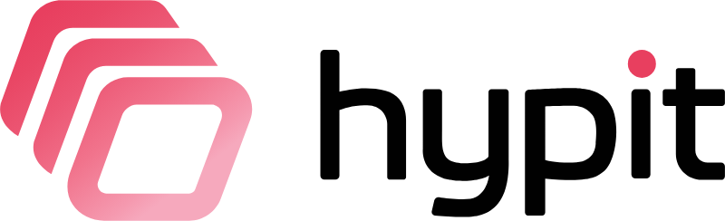
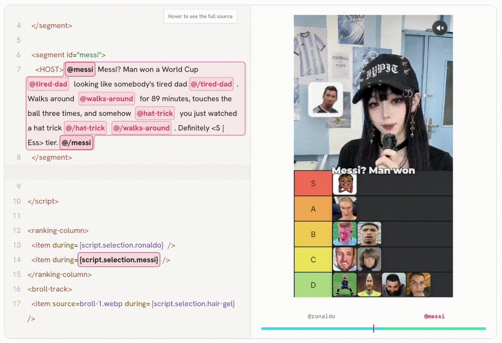

是什么 / 怎么用 / 亮点
- 是什么：Hypit 是一套给编码智能体（Claude Code、Codex 等）用的视频制作语言和运行系统。丢进去一条参考视频，智能体会把它“克隆”成一套完整、可编辑、可以重复运行的工作流，包括素材、字幕、B-roll 和特效。
- 怎么用：先运行
npx skills add hypit-ai/hypit -g安装 Skill，再在任意项目目录里对智能体说/hypit 克隆这个视频……，或者直接描述你想要的视频。 - 亮点：时间轴以“词”而不是“秒”为锚点（SVML 源码）；同一套工作流可以批量生成上百个变体；组件可插拔；不调用生成模型也能用代码渲染出成片。Hypit 本身免费，只有你选用的模型服务需要付费。
Hypit
README 的标语是 “Clone any viral video with AI agents”，副标语是 “1 command, 100 variants, 100M views.” 它的核心思路是把视频变成智能体能读写的“源码”，也就是 SVML。脚本里的每个词都可以挂接主持人画面、B-roll、排行榜条目等组件，改一句台词，时间会自动重新排布。
README 也特别说明，克隆视频只是“最快的入口”，不是唯一用法。你也可以从模板起步，或者让智能体从零写工作流。生成模型同样是可选的：只用字幕、动态图形和代码渲染画面，也能编出成片。

一次安装
npx skills add hypit-ai/hypit -g这条命令安装的是 Skill。第一次使用时，智能体会检查有没有 Hypit 可执行文件，缺的话会协助你准备，视频项目放在哪个目录都可以。模型服务方面，官方推荐托管服务 HypiHub，也支持你自己的 API 或本地模型：把服务名和 API 文档告诉智能体，它就能接上。详见 智能体环境 与 模型与部署服务。
示例
README 给了三组“参考视频 → 三个克隆版本”的示例，每组都附上 reference.svml 源文件和制作笔记（视频托管在 GitHub，请到原仓库观看）：
| 类型 | 内容 | 克隆变体 | 总成本 |
|---|---|---|---|
| UGC | “GOAT DEBATE”：20 秒足球梯队榜单，Seedance 2 Mini 生成 A-roll，GPT Image 2 生成配图，WhisperX 做词级对齐，64 个无头 Chromium 并发渲染 | 换成香蕉猫解说 / 排名反转 / 球员全换成科技公司创始人 | $1.15 |
| 播客 | “DAILY CREATINE”：18 秒播客片段，分屏访谈版式，按说话人区分的卡拉 OK 字幕 | Pepe 与 Doge / 换成视黄醇护肤 / 换成 App 推广 | $1.07 |
| 街头采访 | “NICE RIDE”：26 秒街采，字幕根据人脸框跟随头部，配音效同步的 emoji 揭示板 | Wojak 与 Chad / 西班牙语版 / 跑车换成 F1 | $1.09 |
使用 /hypit 技能
在任意空目录或现有项目里开一个会话，直接下指令即可，例如：
/hypit Clone this video: /path/to/video.mp4, and replace the ranking content with ...
/hypit Make a ranking video that puts Hypit in S tier.接下来，智能体会检查环境、申请这条视频需要的凭据、生成素材，最后拼装出完整成片。
为什么选 Hypit
- 克隆任意视频：得到的是完整工作流，不只是脚本拆解。
- 一套工作流，上百个变体：复用版式和已有素材，只重新生成要变的部分。
- 组件可插拔：换掉主持人，字幕不用动。
- 开源：没有按席位或按渲染次数的收费，也不加水印，只有模型服务按你选用的服务计费。
能做什么
README 列出的场景包括：付费社交广告（克隆投放效果好的广告，同一天出几十个开头变体）、爆款短视频模板化、TikTok Shop 和带货视频、AI UGC 与口播、播客和访谈切片、纯代码渲染视频，以及多语言本地化版本。
参与贡献与合作伙伴
项目欢迎 PR，文档、示例和翻译都算贡献，具体流程见 CONTRIBUTING.zh-CN.md。组件一般留在拥有它的视频项目里，也可以打成 tarball 或发布到 npm 分享。README 还列了一批首发合作伙伴（Watcha、TokenDance、AutoClaw、OpenAgents、Monid、HiAPI、Pollo API、BeatAPI 等），以及 Star 历史和贡献者墙。
许可证要点
- 基础是 Apache-2.0，另外附加了条件。自用、企业内部使用、为客户做商业项目、单租户部署，都不需要商业授权。
- 以下情况需要商业授权：搭建多租户或 SaaS 服务（一个 workspace 算一个租户），或者把 Hypit 及其衍生作品卖出去、捆绑分发以获利。允许 fork 和修改，但发布时必须沿用同一许可证，而且不能用来牟利。
- 不得移除 CLI、运行报告等面向用户界面里的名称、LOGO 和版权信息。
- 生成的视频等产出物归用户所有，可以商用，但还要遵守第三方模型服务的条款。
评述
Hypit 的特别之处在于把“视频剪辑”变成了“代码工程”：SVML 以词为时间锚点，智能体可以像改代码一样 diff、复用、批量变体。对投放团队来说，最有价值的是“结构不变、只换变量”这套模式。不过，README 宣传的单条约 $1 成本依赖具体模型的报价；“100M views”是营销口号，不是可以核验的指标。打算基于它做对外服务的团队，一定要先读清楚多租户和商业再分发这两条限制。